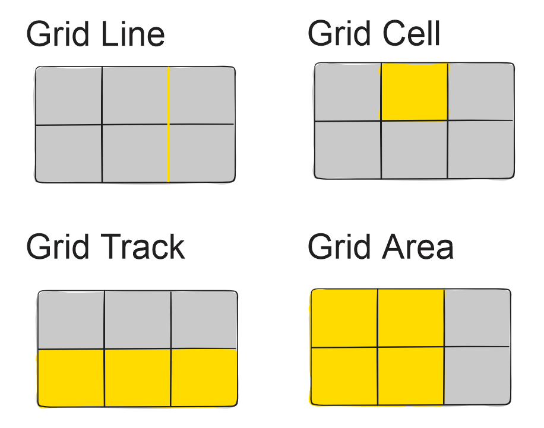

CSS Grid
Terminología de CSS Grid
- Grid Container: El elemento al que se le aplica 'display: grid' Es el padre directo de todos los elementos de la cuadrícula.
<div class="container">
<div class="item item-1"> </div>
<div class="item item-2"> </div>
<div class="item item-3"> </div>
</div>
Para el ejemplo sólo aplican los items:
<div class="container">
<div class="item"></div>
<div class="item">
<p class="sub-item"> </p>
</div>
<div class="item"> </div>
</div>

Figura 1. Definición de los grid items. Autoría propia.
Dentro de las propiedades de CSS Grid se encuentran:
Propiedades del contenedor padre:
-
display
Define el elemento como un contenedor de cuadrícula y establece un nuevo contexto de formato de cuadrícula para su contenido.
Propiedades:- grid: genera una cuadrícula a nivel de bloque
- inline-grid: genera una cuadrícula de nivel en línea
-
grid-template-columns y grid-template-rows
Define las columnas y filas de la cuadrícula con una lista de valores separados por espacios. Los valores representan el tamaño de la pista y el espacio entre ellos representa la línea de la cuadrícula.
Propiedades:- <track-size>: Puede ser una longitud, un porcentaje o una fracción del espacio libre en la cuadrícula
- <line-name>: Un nombre aleatorio que se desee poner
-
grid-template
Es una abreviatura para configurar las filas de plantilla de cuadrícula, las columnas de plantilla de cuadrícula y las áreas de la plantilla de cuadrícula en una sola declaración.
Propiedades:- none
- <grid-template-rows> / <grid-template-columns>
-
column-gap
row-gap
grid-column-gap
grid-row-gapEspecifica el tamaño de las líneas de la cuadrícula. Puede pensar en ello como establecer el ancho de las canaletas entre las columnas / filas.
Propiedades:- line-size

Figura 2. Líneas de cuadrícula con grid. Recuperado de https://css-tricks.com/snippets/css/complete-guide-grid/. -
justify-items
Alinea los elementos de la cuadrícula a lo largo del eje en línea (fila). Este valor se aplica a todos los elementos de la cuadrícula dentro del contenedor.
Propiedades:- start
- end
- center
- stretch
.container { justify-items: start | end | center | stretch; } -
align-items
Alinea los elementos de la cuadrícula a lo largo del eje del bloque (columna). Este valor se aplica a todos los elementos de la cuadrícula dentro del contenedor.
Propiedades:- start
- end
- center
- stretch
.container { align-items: start | end | center | stretch; } -
justify-content y align-content
justify-content: Esta propiedad alinea la cuadrícula a lo largo del eje en línea (fila).
align-content: Esta propiedad alinea la cuadrícula a lo largo del bloque (columna).
Propiedades:- start
- end
- center
- stretch
- space-around
- space-between
- space-evenly
.container { justify-content: start | end | center | stretch | space-around | space-between | space-evenly; } .container { align-content: start | end | center | stretch | space-around | space-between | space-evenly; } -
grid
Un método abreviado para establecer todas las siguientes propiedades en una sola declaración: grid-template-rows, grid-template-columnas, grid-template-areas, grid-auto-rows, grid-auto-columns y grid-auto-flow.
.container { grid: 100px 300px / 3fr 1fr; } Es equivalente a: .container { grid-template-rows: 100px 300px; grid-template-columns: 3fr 1fr; }
Propiedades para los hijos:
-
grid-column-start
grid-column-end
grid-row-start
grid-row-endDetermina la ubicación de un elemento de la cuadrícula dentro de la cuadrícula haciendo referencia a líneas de cuadrícula específicas. grid-column-start / grid-row-start es la línea donde comienza el elemento, y grid-column-end / grid-row-end es la línea donde termina el elemento.
Propiedades:- <line>: Puede ser un número para referirse a una línea de cuadrícula numerada, o un nombre para referirse a una línea de cuadrícula con nombre
- span <number>: El elemento se extenderá a lo largo del número proporcionado de grid tracks
- span <name>: El elemento se extenderá hasta que llegue a la siguiente línea con el nombre proporcionado
- auto: Indica colocación automática, un span automático o un span predeterminado de uno.
.item-a { grid-column-start: 2; grid-column-end: five; grid-row-start: row1-start; grid-row-end: 3; }
Figura 3. Localización de items. Recuperado de https://css-tricks.com/snippets/css/complete-guide-grid/. -
grid-area
Da un nombre a un elemento para que pueda ser referenciado por una plantilla creada con la propiedad grid-template-areas.
-
justify-self y align-self
justify-self alinea un elemento de la cuadrícula dentro de una celda a lo largo del eje en línea (fila) (a diferencia de align-self que se alinea a lo largo del eje del bloque (columna)). Este valor se aplica a un elemento de la cuadrícula dentro de una sola celda.
Propiedades:- start
- end
- center
- stretch
A continuación se presenta un video para complementar el tema:
Referentes bibliográficos
- Digital Guide. (2020). CSS grid: diseño con función inteligente. Recuperado de https://www.ionos.es/digitalguide/paginas-web/creacion-de-paginas-web/css-grid-layout/
- [Manz]. (s.f.). Grid CSS. Recuperado de https://lenguajecss.com/css/maquetacion-y-colocacion/grid-css/
- House C. (2016). A Complete Guide to Grid. Recuperado de https://css-tricks.com/snippets/css/complete-guide-grid/
- Recio García, J. A. (2016). HTML5, CSS3 y JQuery: curso práctico. RA-MA Editorial. Recuperado de https://elibro-net.bibliotecavirtual.unad.edu.co/es/ereader/unad/106494